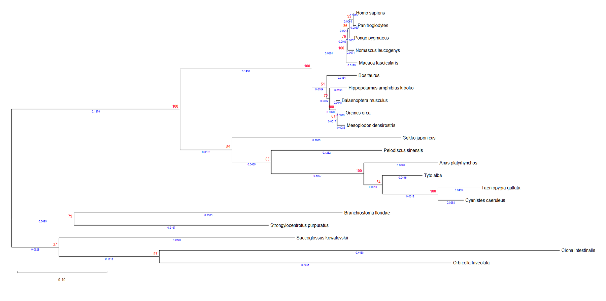
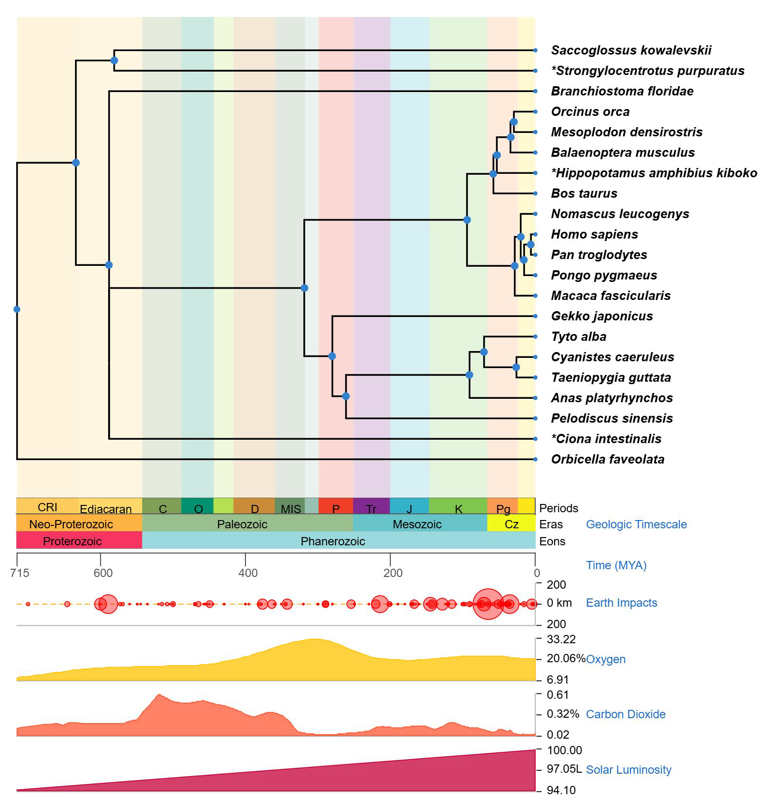
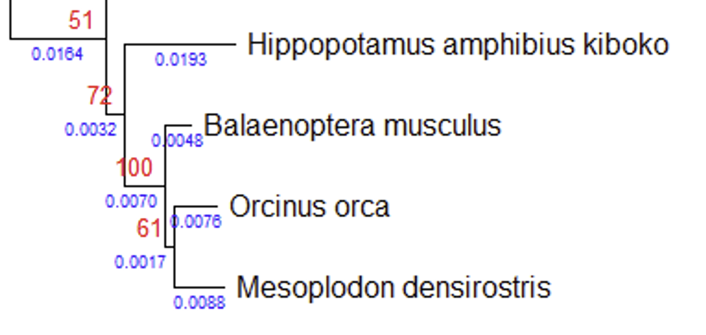

COMPARATIVE PHYLOGENETIC ANALYSIS OF CETACEAN EVOLUTION
A comparative bioinformatics project using homologous protein and coding sequences to evaluate the evolutionary placement of whales and compare tree-building strategies.
Research question
Which taxa are most closely related to whales in the selected dataset, and which phylogenetic reconstruction provides the clearest biologically interpretable topology?
Approach
Orthologous sequences were collected across vertebrate and invertebrate taxa, aligned, trimmed and analyzed using multiple parsimony and likelihood approaches. Trees were rerooted with outgroups and compared against a TimeTree reference.
Key interpretation
The selected rerooted ML-GTR tree recovered the three whale species as a monophyletic group with Hippopotamus amphibius as the nearest land-dwelling relative represented in the dataset.
Selected visuals


